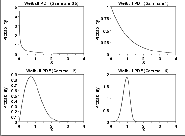

|
1.
Exploratory Data Analysis
1.3. EDA Techniques 1.3.6. Probability Distributions
|
|||
| Shape Parameters |
Many probability distributions are not a single distribution, but
are in fact a family of distributions. This is due to the
distribution having one or more shape parameters.
Shape parameters allow a distribution to take on a variety of shapes, depending on the value of the shape parameter. These distributions are particularly useful in modeling applications since they are flexible enough to model a variety of data sets. |
||
| Example: Weibull Distribution |
The Weibull distribution is an example
of a distribution that has a shape parameter. The following graph
plots the Weibull pdf with the following values for the shape
parameter: 0.5, 1.0, 2.0, and 5.0.
 The shapes above include an exponential distribution, a right-skewed distribution, and a relatively symmetric distribution. The Weibull distribution has a relatively simple distributional form. However, the shape parameter allows the Weibull to assume a wide variety of shapes. This combination of simplicity and flexibility in the shape of the Weibull distribution has made it an effective distributional model in reliability applications. This ability to model a wide variety of distributional shapes using a relatively simple distributional form is possible with many other distributional families as well. |
||
| PPCC Plots | The PPCC plot is an effective graphical tool for selecting the member of a distributional family with a single shape parameter that best fits a given set of data. | ||